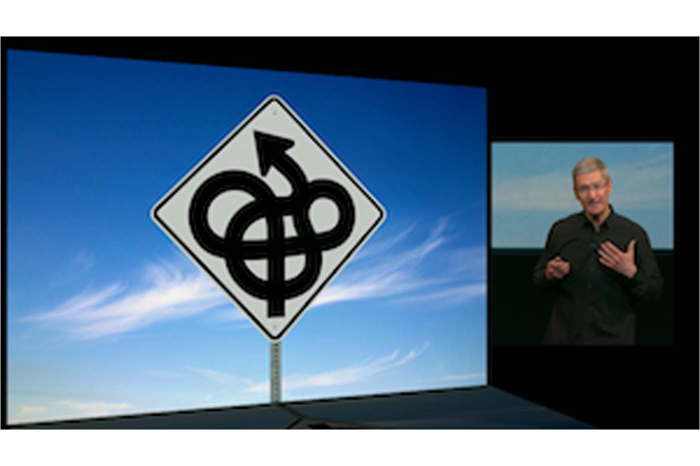
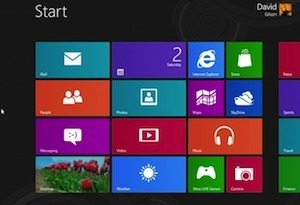

The Stupidity of Windows 8 in a Nutshell
Originally published at https://singularityhacker.com/the-stupidity-of-windows-8-in-a-nutshell

Tim Cook could not have said it better when he summarized Microsoft’s confusion. “..they’re trying to make PCs into tablets and tablets into PCs.”
The Metro UI on the Desktop It’s as if Microsoft doesn’t understand the different use cases of mobile and desktop computing interfaces. We need large icons in the context of mobile computing because we’re using our fingers and our fingers are fat. You don’t need giant tiles when you’re using the tiny curser of the mouse. The typical user has to be struck with the silliness of the situation when they feel like they have been thrust into what looks like a smartphone with a mouse.

Full Screen apps on the desktop On the other hand, what does one typically want to do when they are sitting at a workstation with one or more large monitors? Multitask and compare data. Why would I be forced into a full screen view on a 20-inch monitor? The only reason applications are full screen on mobile devices is that it is assumed that screen real estate is small. Microsoft is indeed very confused.
“Microsoft has tried very hard to convince us that the Metro interface is designed for mouse-and-keyboard desktop PC use, but that’s simply a barefaced lie: It’s a touch interface that’s primarily designed for small-screen devices — tablets, or touchscreen laptops at a stretch.” - @mrseb at ExtremeTech
The solution What can be done to remedy the situation? Treat the Metro UI and desktop as different modes and encourage developers to build applications that work on both. When you’re interacting with windows from a tablet switch into metro mode. When you’re using windows from a desktop with a mouse switch into desktop mode.
This wont fix windows but it’s about ten steps further away from the confusion it currently occupies.